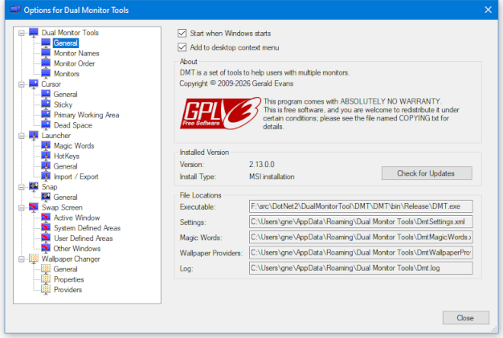
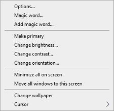
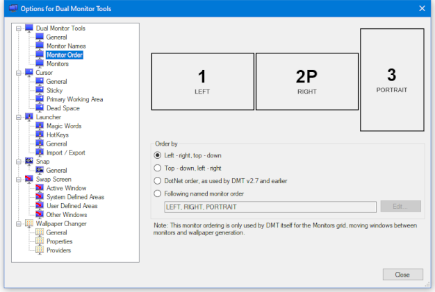
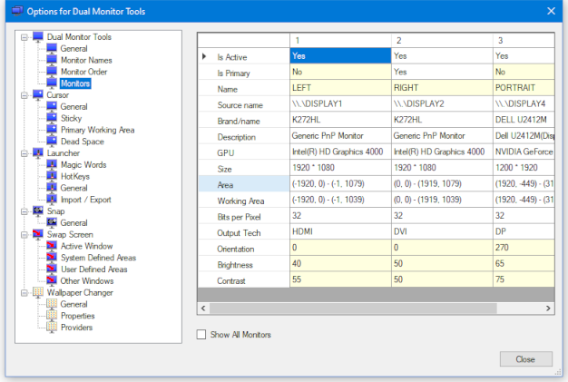

DMT General
Provides configuration information about DMT and your monitors.
'General' options

This provides general options and shows the location of the configuration files that it uses.
Start when Windows starts
If you want DMT to start automatically when your computer boots, then just check the 'Start when Windows starts' option.
Add to desktop context menu
This will add a 'Dual Monitor Tools' menu to the context menu displayed when you right-click the Windows background.

Installed Version
This will show the current version you have installed and whether it was installed from a msi installer or if it is a portable installation installed from a zip file.
File Locations
Shows the location of the files used by DMT.

This controls the numbering of the monitors as used within DMT itself only. The monitor numbers are used within the Monitors grid, when moving windows between monitors and in wallpaper generation.
The choice for ordering is:
- Left - right, top - down: The monitors are ordered left - right by the monitors left hand co-ordinate, and by top - bottom of the monitors top co-ordinate if multiple monitors have the same left hand co-ordinate. This is the default option.
- Top - down, left - right: The monitors are ordered top - down by the monitors top co-ordinate, and by left - right of the monitors left co-ordinate if multiple monitors have the same top co-ordinate.
- DotNet order, as used by DMT v2.7 and earlier: The monitors use the ordering returned by the Windows .NET API. This is what versions prior to version 2.8 used.
- Following named monitor order: If you name your monitors, then you can specify the order using their names. This can be useful if you often connect and disconnect monitors. Any monitors that are not found in the given named list will be added after these using the Left - right, top - down order.
If you have upgraded to version 2.8 or later from 2.7 or earlier, then you may find that your monitor numbers have changed. You can either switch back to using .NET ordering, or update the required settings to use the new ordering.
'Monitors' options

This shows a grid containing details about your monitors. Those cells that have a light yellow background have a context menu, or can be double clicked to change the values.
Currently it is only possible to change the primary monitor and to change each monitor's brightness/contrast/orientation. Changing the monitor brightness/contrast/orientation is not supported on some monitors.
Show all Monitors
This will also show (very limited) information about all possible monitor connections. This is of limited use now, but may be useful when DMT is enhanced to enable and disable monitors.